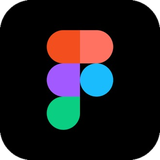
04Raflesia Jajan dan MiaUI/UX aplikasi mobile
Designer
& Creative
Ayo buat sesuatu
yang hangat
Halo, saya
Mahasiswa Informatika yang merancang antarmuka, web, dan desain grafis.
Memadukan logika pemrograman, kepekaan visual, dan riset kecerdasan artifisial untuk membuat solusi digital yang fungsional dan nyaman digunakan.
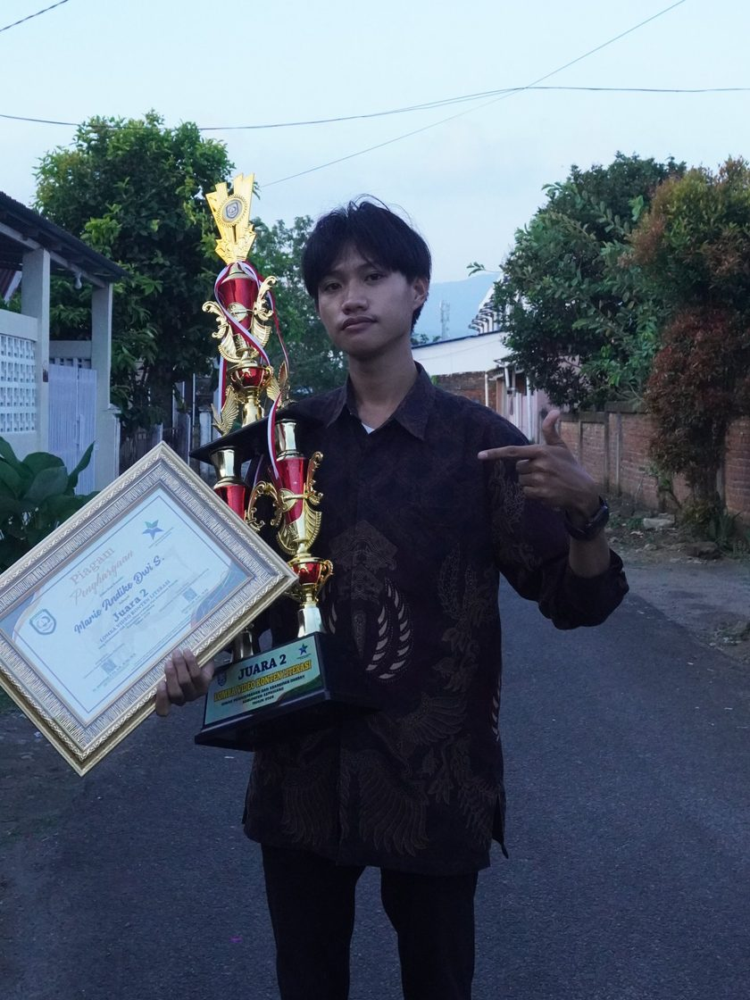
Meow!
Rancangan antarmuka aplikasi di Figma



Film pendek, video edukasi, dan presentasi

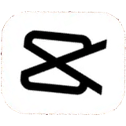

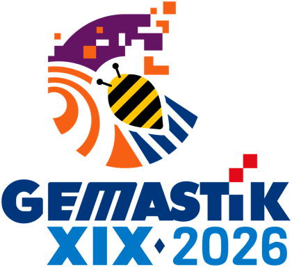
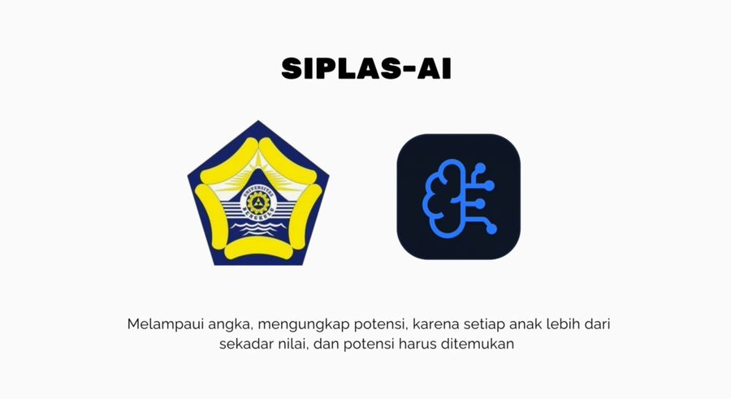
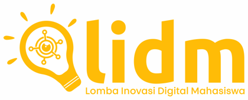


Permainan dan animasi buatan sendiri
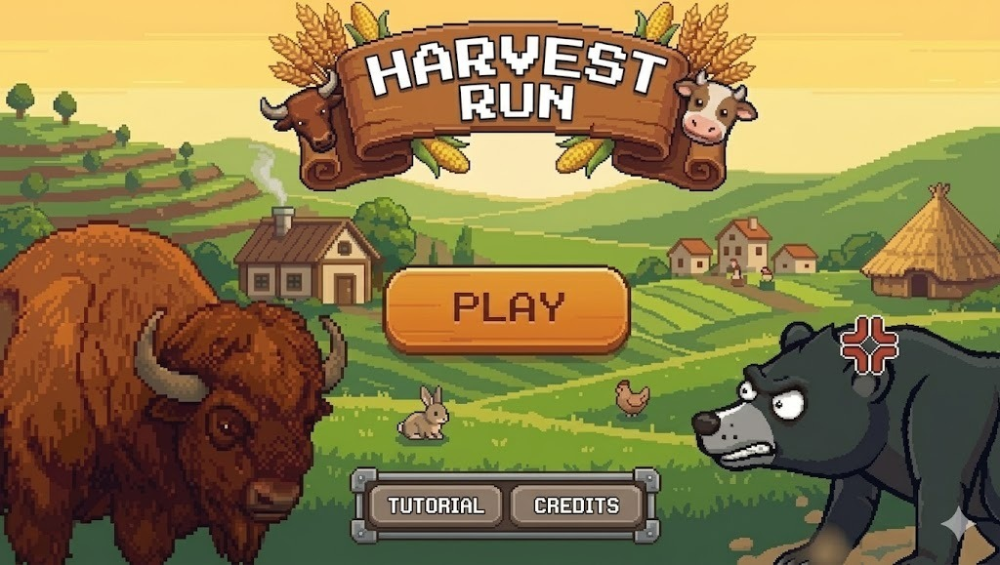
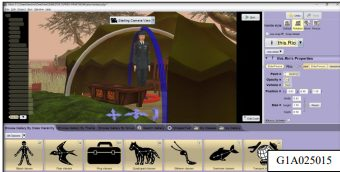
Kampanye sosial, kebangsaan, lingkungan, dan sains


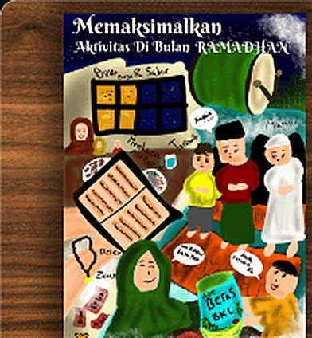
Almamater dan pakaian dinas harian

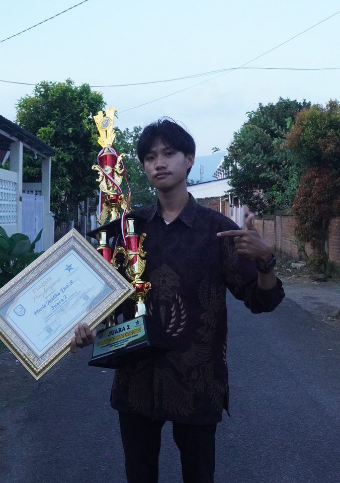
Saya Mario Andiko Dwi Saputra, mahasiswa Informatika Universitas Bengkulu yang berfokus pada UI/UX design, web development, dan pengembangan perangkat lunak. Saya terbiasa merancang antarmuka aplikasi mobile di Figma dan membangun produk digital yang fungsional dan nyaman digunakan.
Dasar pemrograman saya (Python, JavaScript, HTML, CSS, Java) berpadu dengan kemampuan desain visual yang terbukti lewat lebih dari 15 penghargaan desain poster tingkat kota hingga nasional. Saya juga menyusun karya inovasi berbasis kecerdasan artifisial dan machine learning yang meraih juara tingkat nasional hingga internasional, serta mengelola publikasi dan konten digital di ERCOM dan MOSTANEER.
Saya aktif di bidang Pendidikan, Riset, Inovasi, dan Teknologi (PENRISTEK) HIMATIF, terbiasa berpikir kritis dan bekerja dalam tim, dan selalu terbuka untuk kolaborasi proyek maupun penawaran profesional. Hubungi saya lewat email di dikodikod94@gmail.com.
2022 sampai sekarang · Bengkulu
Poster, banner, dan konten media sosial
2022 sampai sekarang · Bengkulu
Publikasi, dokumentasi, dan konten digital
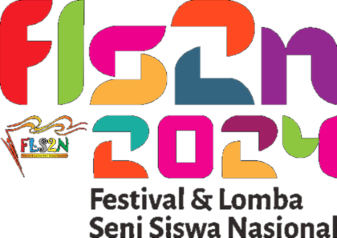
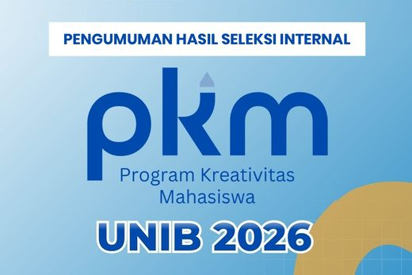
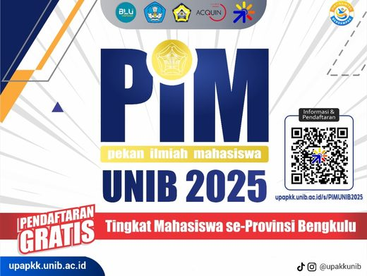
Kompetisi Nasional Inovasi Digital Mahasiswa, Universitas Negeri Makassar · 29 Juli sampai 16 Agustus 2026
"Melampaui Angka, Mengungkap Potensi: Transformasi Asesmen Pendidikan Indonesia melalui Sistem Diagnostik Literasi Berbasis Artificial Intelligence"
10th FAPERTA FAIR, Chiang Mai University, Thailand · 8–9 Agustus 2026
Karya esai "VOCARE: A Voice-Based Digital Twin for Screening Prodromal Parkinson's Disease"
ALURA, GEMASTIK Divisi Smart City 2026 · seleksi internal
Sistem Batimetri Partisipatif Berbasis Crowdsensing Armada Nelayan dan Kecerdasan Artifisial untuk Peringatan Dini Pendangkalan Alur Pelayaran Pelabuhan Pulau Baai.
PKM-KC Internal, Universitas Bengkulu · Juli 2026
Sistem Skrining Risiko Anemia Kehamilan Non-Invasif melalui Palpebral Conjunctiva Berbasis Smartphone dan Machine Learning Terintegrasi Opto-Mechanic Light-Shield.
Pekan Ilmiah Mahasiswa (PIM) UNIB, Universitas Bengkulu · Desember 2025
 Photoshop
Photoshop Canva
Canva ibisPaint X
ibisPaint X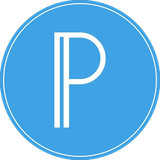
PixelLab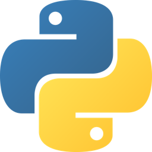
Python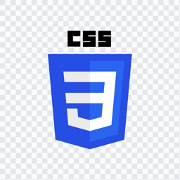
CSS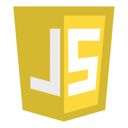
JavaScript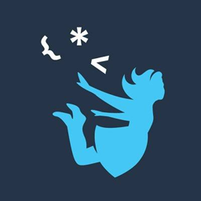
Lainnya
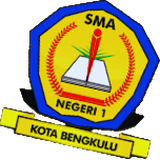
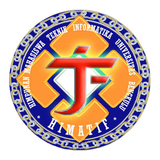

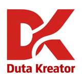
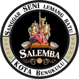

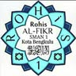
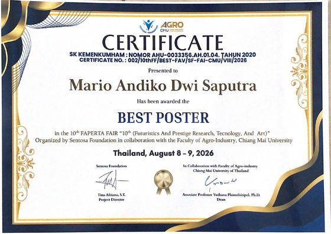
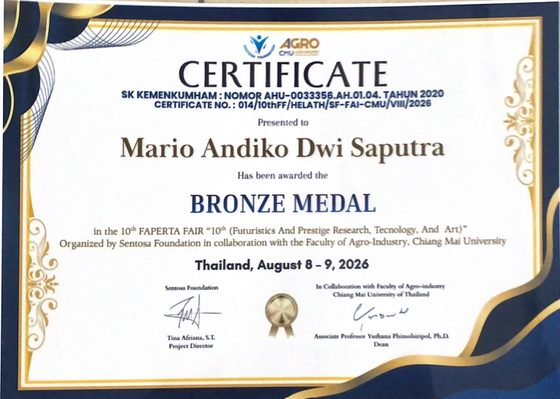
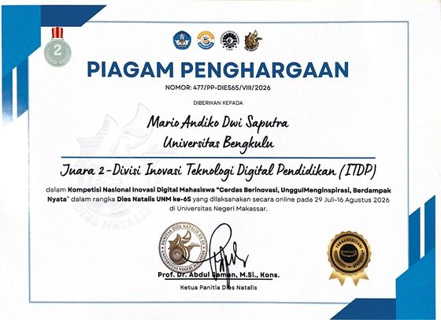
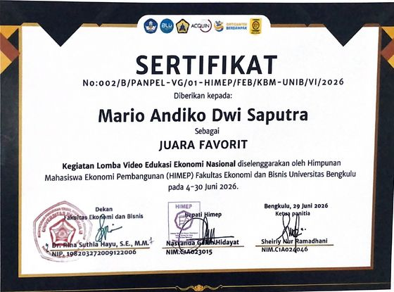
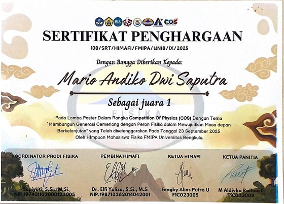
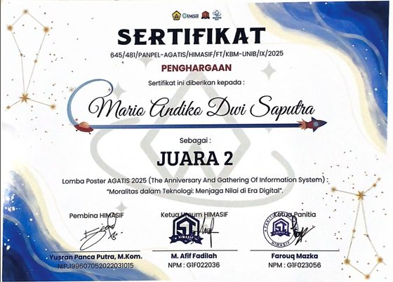
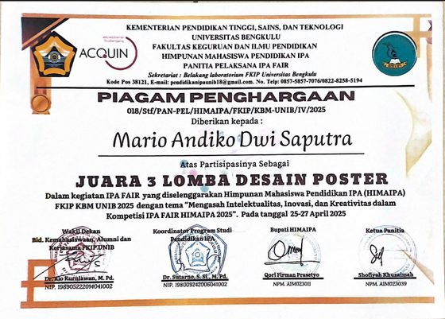
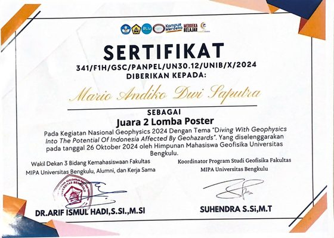
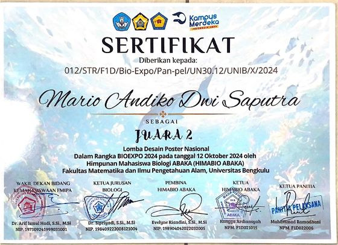
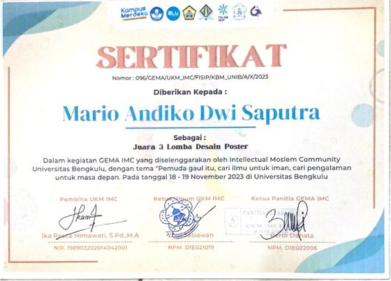
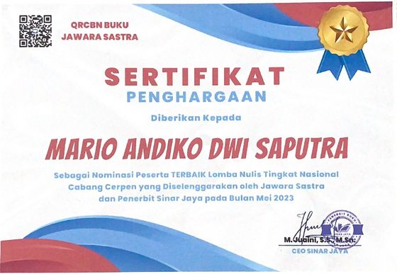
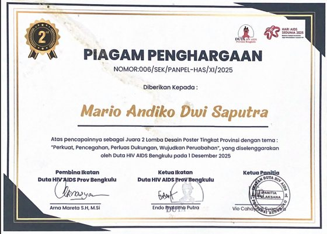
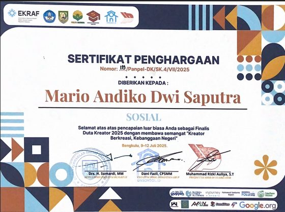
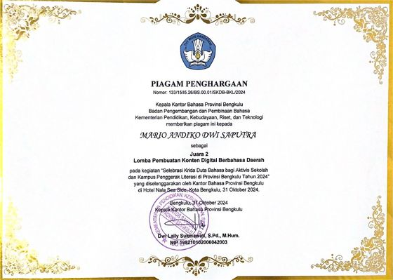
Punya proyek?